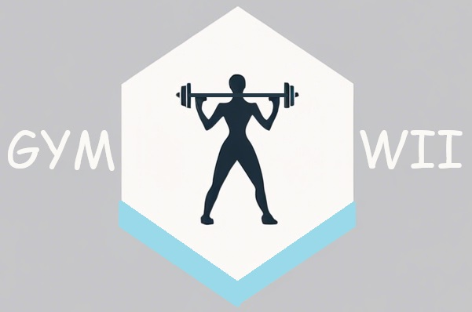
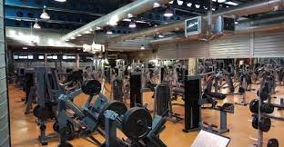

En esta sala de musculación tendrás ese cuerpazo que siempre has querido
''no hay beneficio sin esfuerzo''

¿Quiénes somos?
El Gym WII es un gimnasio que se encuentra en Sevilla, Andalucía. Nuestro objetivo es el de ayudar a las personas a mejorar su físico y su salud. Proyecto creado por Adán Ruiz López y Jesús Damas García.
Nacimos en familias diferentes pero el Gym WII nos unió para crear un gimnasio que sea accesible para todas las personas, tanto económicamente, como físicamente. Nuestros monitores están disponibles 24/7 para que puedas ver cómo vas mejorando.
¿Por qué elegirnos?
Nuestro gimnasio está equipado con todo tipo de máquinas para poder ejercitar todas las partes del músculo además de monitores especializados para hacerte una rutina específica para ti basada en tus datos médicos. También contamos con una sauna para que puedas descansar y relajarte.
Contamos con máquinas de todos los tipos y repetidas varias veces para no tener que turnarte con nadie. Mancuernas de hasta 50 kilos para los más fuertes, pero también un surtido de mancuernas en el que encontrar el peso ideal en tus entrenamientos.
¿No te hemos convencido aún? Aquí un artículo que puede hacer que cambies de idea:
¿Sabías que entrenar en un gimnasio puede reducir el riesgo de enfermedades cardiovasculares, incluso el riesgo de tener cáncer? Según la ONU, entrenar 1 hora al día tiene una cantidad inimaginable de buenos efectos para la salud. Por no decir, que vas a tener ese cuerpo musculoso que siempre has querido. España es uno de los países con el índice de obesidad más elevado de Europa, y gimnasios como el nuestro están para intentar que ese índice se reduzca, sintiéndonos orgullosos de nuestros usuarios cumpliendo sus objetivos.
Página hecha por Jesús